Cast Iron Media Kim Laidlaw

- Culinary content creator
- Recipe developer
- Project editor
Let's chat! kim@castironmedia.com
My love for cooking and baking runs deep…
…like, “wake up thinking about butter” deep. I live for crafting irresistible recipes, exploring bold new flavors, and turning every meal into a damn good time.
Whether I’m authoring or co-authoring cookbooks, dreaming up wildly delightful dishes, or herding a team of food fanatics to create content, I thrive on bringing culinary ideas to life.
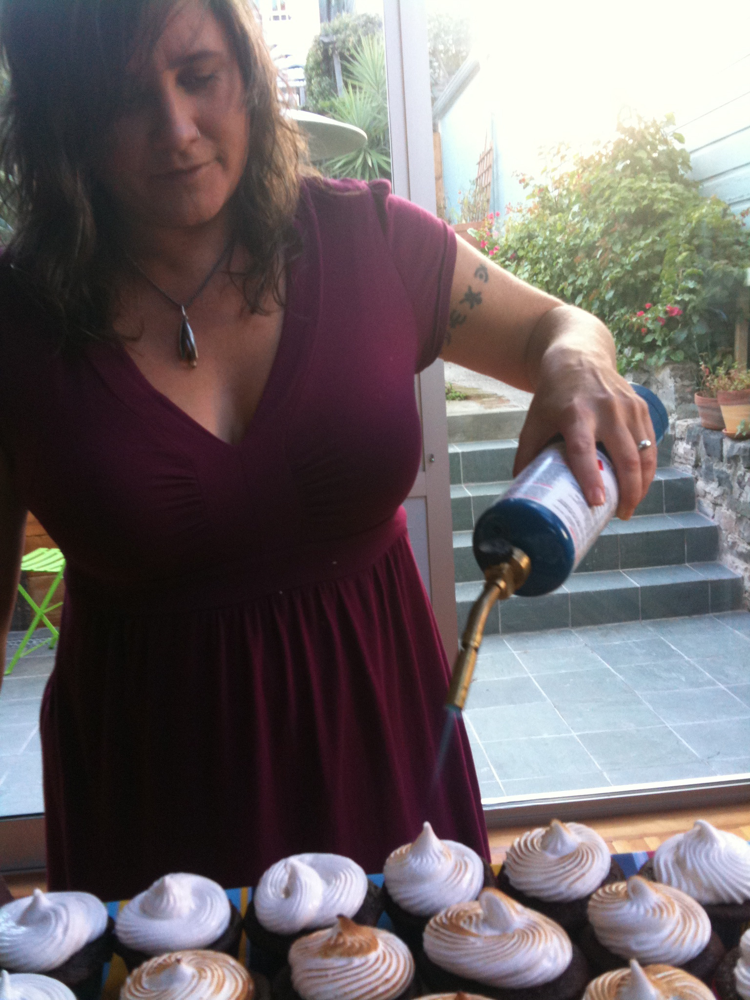
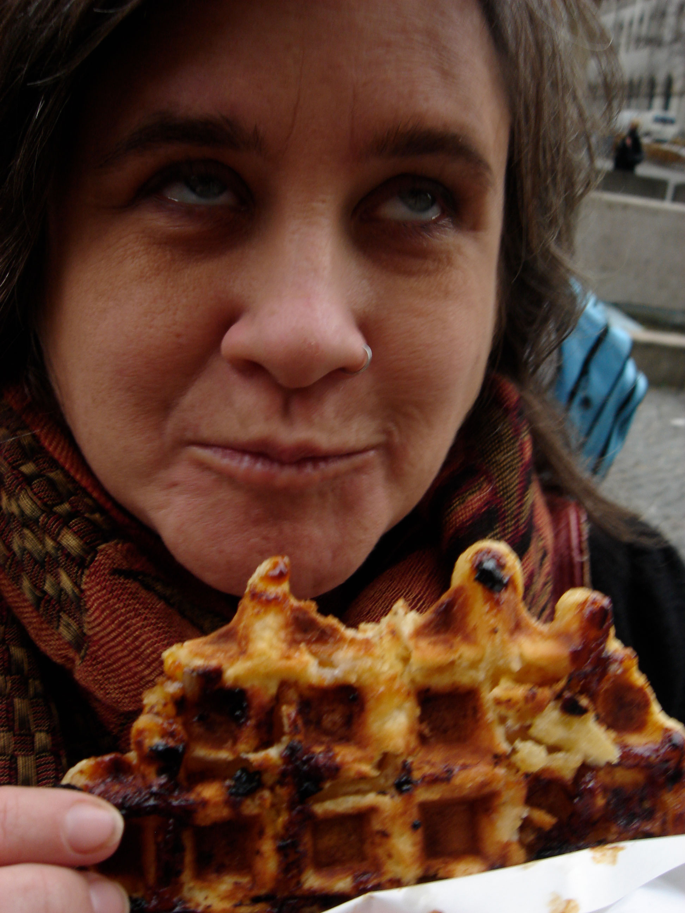
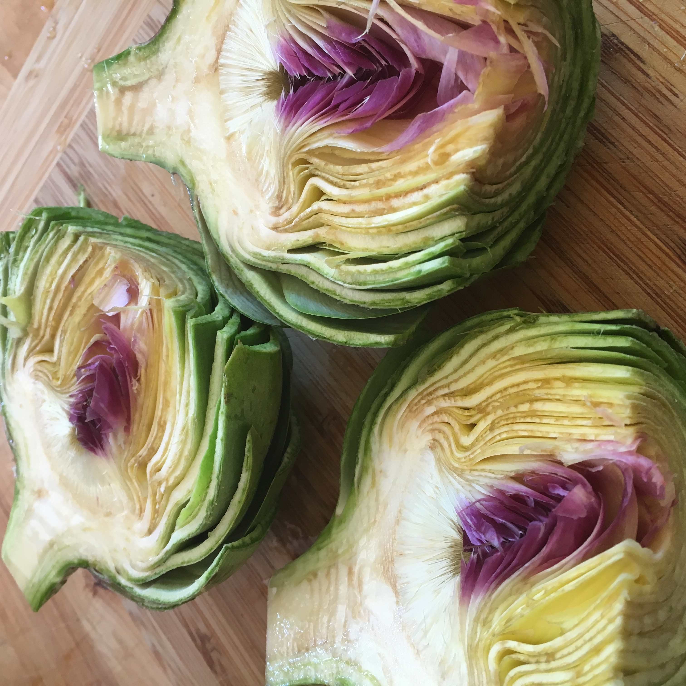
hundreds of cookbooks
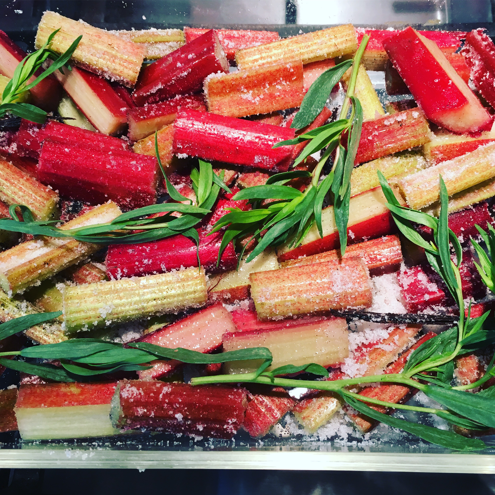
thousands of recipes
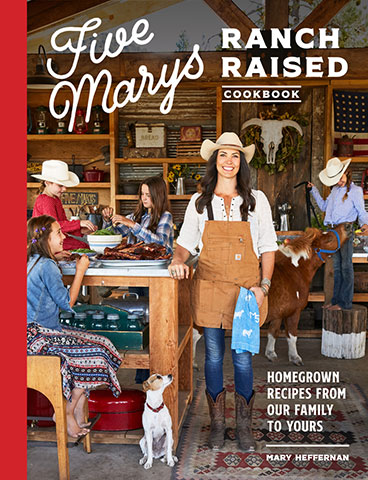
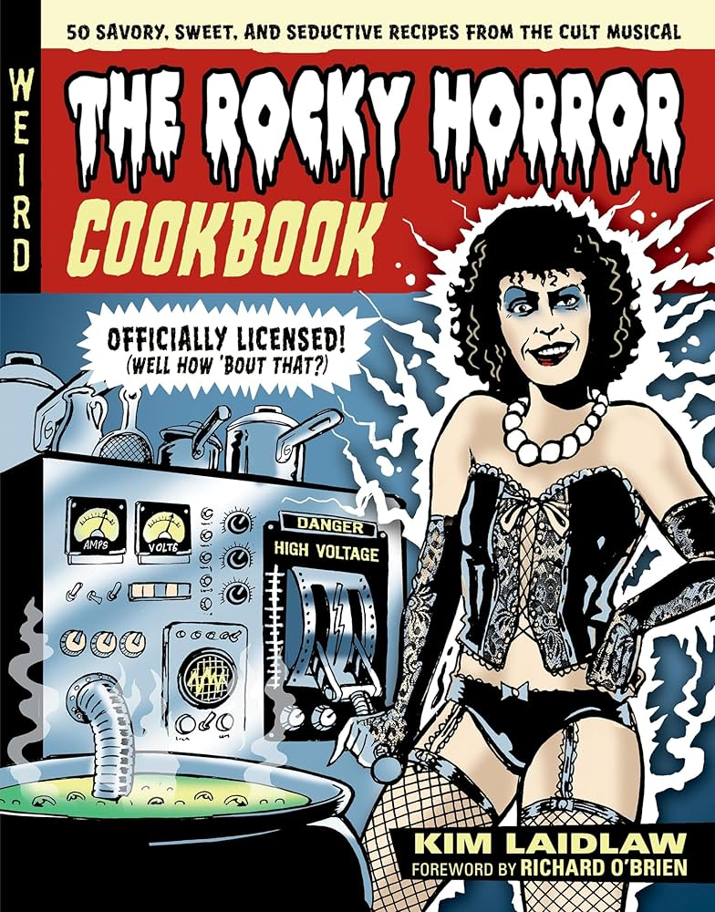

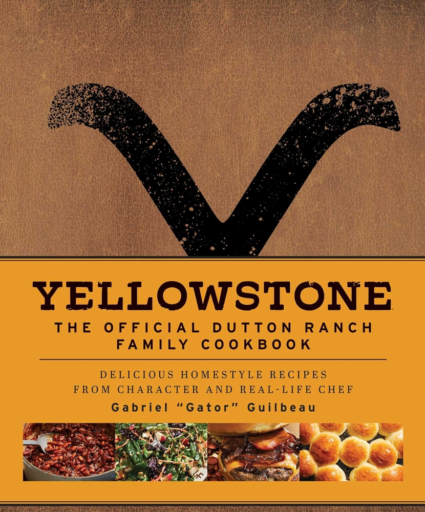

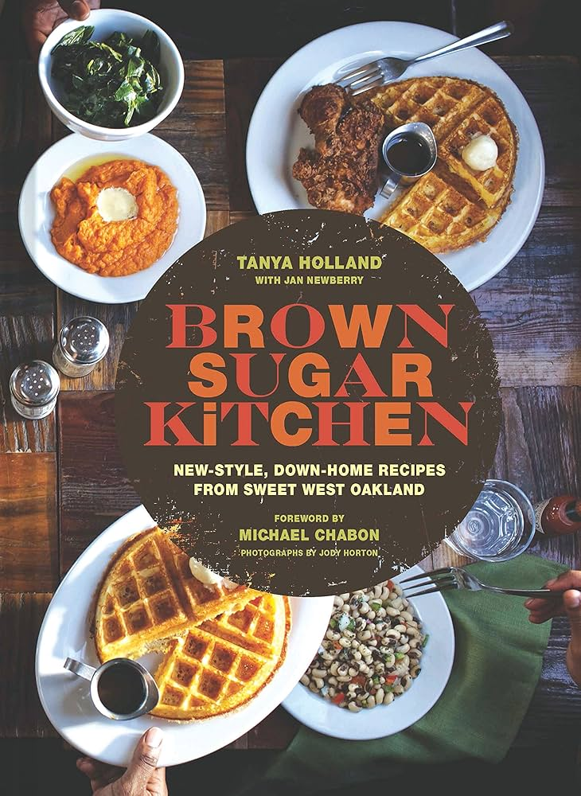
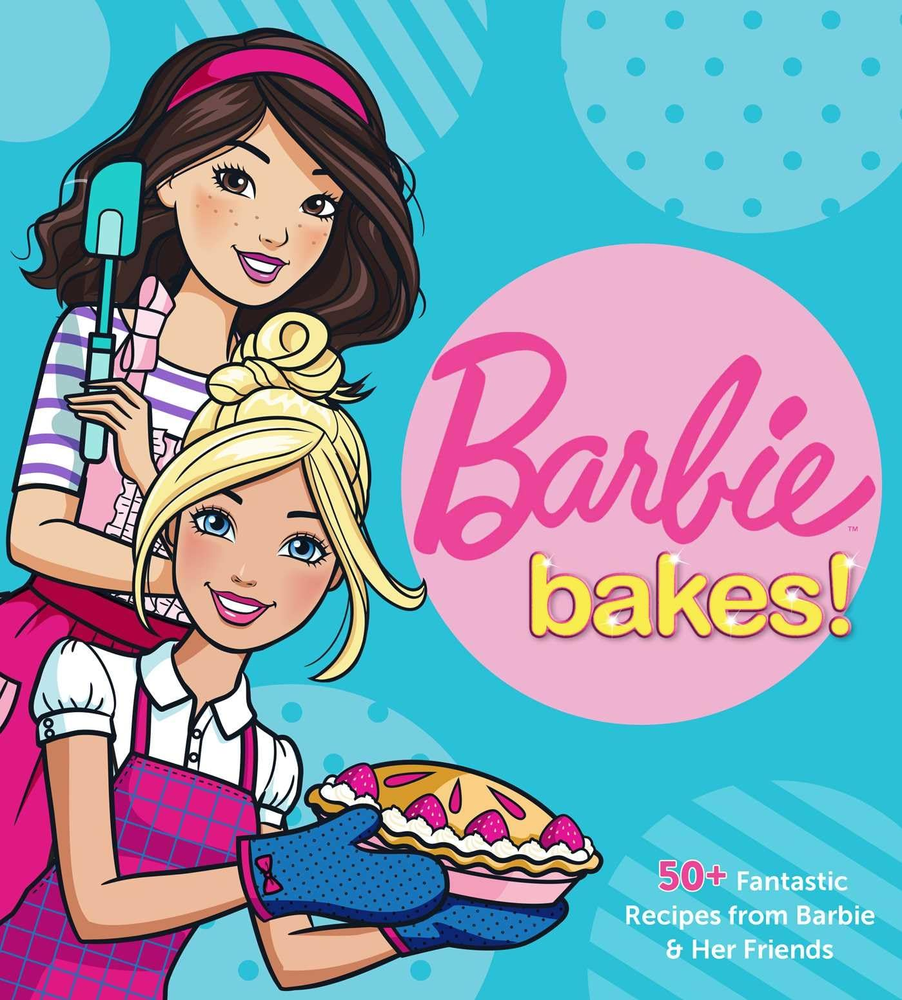
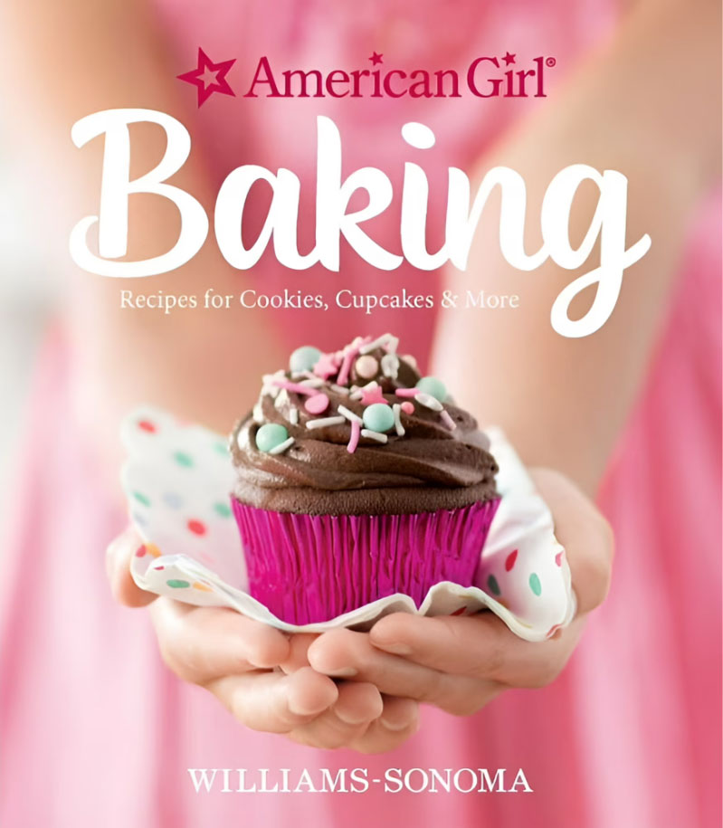
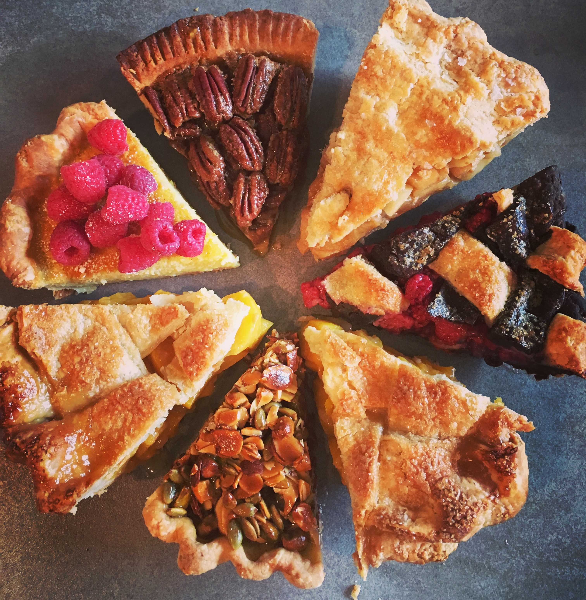
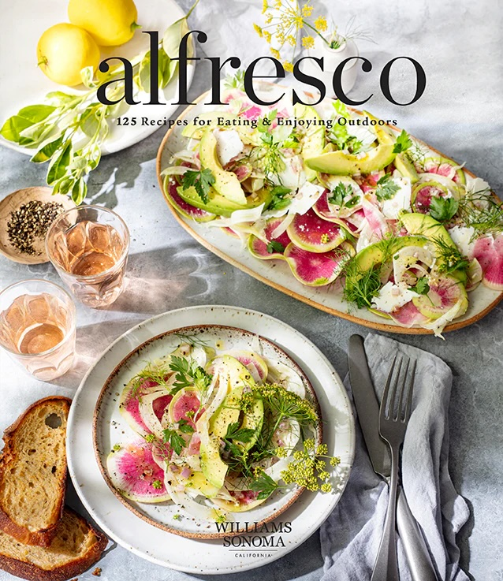
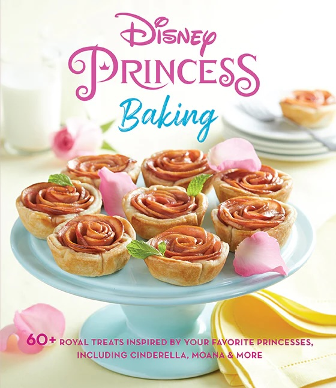

Recipe Developer & Tester
I bring recipes to life, from concept to perfection.
Whether developing and testing dishes for brands like Disney, Netflix, Williams Sonoma, Samuel Adams, Paramount, American Girl, and Impossible Foods, or collaborating with top chefs, bloggers, and cookbook authors, I craft recipes that are as reliable as they are flavorful.